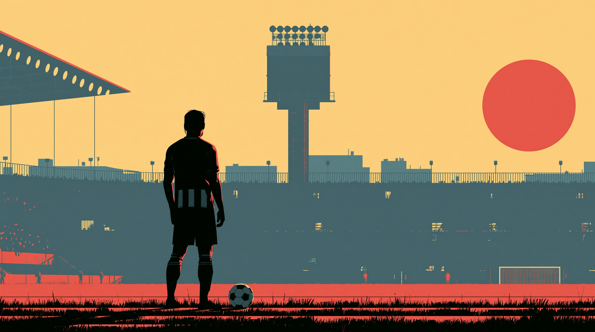

C1 Advanced · Football & Tactics
The Language of the Beautiful Game
Master advanced footballing vocabulary through Eintracht Frankfurt — from tactical press to clinical finishing.

Eintracht Frankfurt — Die Adler
Europa League Champions · Bundesliga · Deutsche Bank Park
Total Score
0
Section: Multiple Choice
🏆
Full Time — Outstanding!
0/24